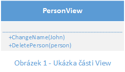
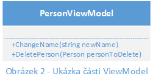
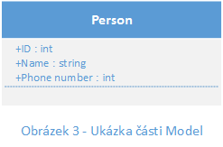
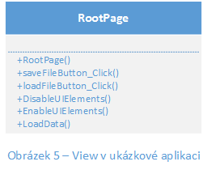
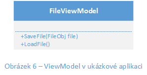
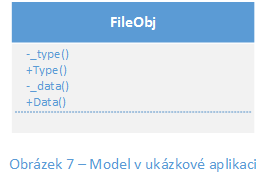
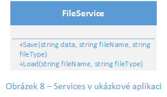
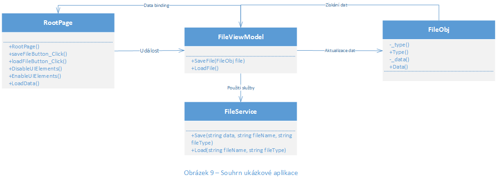

MVVM model
Při vydání WPF v roce 2006 si softwarový inženýři v Microsoftu řekli, že by bylo dobré nějakým způsobem členit kód aplikace a tedy vytvořili vzorec MVVM, který bude slpužit tomuto účelu na všech možných XAML platformách. Jedná se tedy o vzorec pro rozčlenění kódu v projektu. Kdy se dá aplikovat na všech XAML platformách. Cílem MVVM je poskytnout jasné oddělení ovladačů v uživatelském rozhraní a jejich logikou. Jak z názvu vyplívá, tak se skládá ze tří částí, tedy Model, View, ViewModel. Ale doopravdy jsou zde čtyři části, kdy ke třem zmíněným částem patří část Services. Tento vzorec může být těžší na pochopení, vzhledem k jeho názvu (Model-View-ViewModel, kdy struktura je View-ViewModel-Model) a také kvůli existenci čtvrté vrstvy tohoto vzorce, přesto všechno je velice jednoduchý a užitečný viz. výhody.Výhody
- Výborný workflow mezi vývojáři a designery, konkrétně poskytuje výhody jako usnadnění práce během procesu vývoje aplikace, kdy vývojáři a designeři mohou pracovat nezávisle a souběžně na jejich komponentách projektu. Například designeři budou pracovat s View částí a vývojáři budou pracovat s ViewModel a Model částmi.
- Usnadění testování jednotek, kdy vývojáři mohou provádět dané testy bez používání View částí.
Jednotka v testování jednotek: dev.to - Unit in unit testing - Možnost upravování designu aplikace bez nutnosti úpravy kódu, protože View část je dělána v XAML a nová verze by tedy měla fungovat s existující ViewModel částí.
- Pokud existuje implementace Model části, u které je riskantní provádět změny, tak v tomto případě ViewModel část funguje jako adaptér pro tyto části a umožňuje se vyhnout velkým změnám kódu.
Nevýhody
- Generalizace ViewModel části u rozsáhlejších aplikací je složitější, tedy data binding způsobuje větší využití hardwarových prostředků cílového zařízení.
Struktura
View
Tato vrstva definuje strukturu, layout a obecně vzhled uživatelského rozhraní. View by měl být ve většíně napsaný v XAML s minimálním code-behind, který neobsahuje logiku (př. Page1.xaml je část s XAML a Page1.xaml.cs je code-behind pro tuto část). View a ViewModel jsou propojeny zapomoci code-behind.

ViewModel
ViewModel souží jako prostředník mezi View a Model, kdy je odpovědný za zpracovávání operace s Model vrstvou, kdy typicky zapomoci metod pracuje s daným Modelem a pak poskytuje jeho data View části pro zobrazení uživateli.

Model
Model je implementace doménového modelu aplikace, který zahrnuje business a validační logiku, uložiště, DTO a POCO, například to je třída Person, která má nějaké atributy a může mít i logiku pro porovnávání objektů viz. Porovnávání objeků.

Services
Shrnutí činnosti mezi vrstvami
Kód je tedy rozdělený na čtyři vrstvy, kdy je zde View část, která obsahuje všechny záležitosti týkající se grafiky, tedy různé animace, změny barvy, atd. Přičemž tato vrstva se dokáže odkazovat na ViewModel a ne naopak, výhodou je nezávislost ViewModelu pro přenášení mezi různými assembly. ViewModel vrstva slouží pro práci s Modelem, proto obsahuje operace (metody) s Modelem, ke kterému je "spojena" (pozn. v praxi má jeden Model vždy jeden ViewModel). Tato vrstva může využít vrstvy Services pro abstrakci metod, například ukládání do souboru, pokud to chceme změnit na ukládání na cloudové uložiště, tak stačí změnit vrstvu Services, bez nutnosti měnit ViewModel. Vrstva Model slouží jako logika aplikace, kdy tato vrstva zahrnuje například DTO, POCO a nebo validační logiku (např. porovnání objektů).

Obrázek 4 - Souhrn částí MVVM
Shrnutí MVVM vzorce v kurzu MVA: Microsoft Virtual Academy - Building blocks: UWP
Praktická ukázka
Aplikace pro úpravu textu a ukládání textu do .json souboru.
View
View část ukázky je RootPage.xaml a RootPage.xaml.cs, kde se nachází controly pro úpravu textu a jeho ukládání do souboru. V code-behind (RootPage.xaml.cs) jsou rutiny pro událost kliknutí a metody upravující uživatelské rozhraní.

ViewModel
ViewModel část ukázky je FileViewModel.cs, což je třída, která pracuje s Model částí a má na starost ukládání a načítání z uložiště cílového zařízení. Přičemž využívá vrstvy Service, které mají zaúkol abstrakci metod pro danou práci s Modelem.

Model
Model část ukázky je třída FileObj.cs reprezentují uložený soubor. Za účel má jenom uchovávat data o formátu souboru a samotném obsahu dokumentu.

Services
Services část ukázky je třída FileService.cs, která má zaúčel abstrakci metod ViewModelu a v tomto případě se jedná o ukládání a načítaní souboru z uložiště. Zde se projeví výhoda služeb, kdy je možné změnit službu a není nutné zasahovat do ViewModelu.

Souhrn
Odkaz na ukázku: Notepad